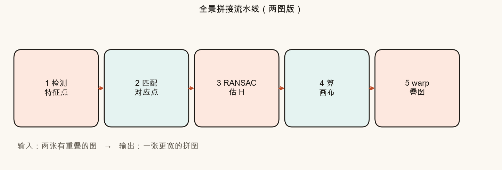
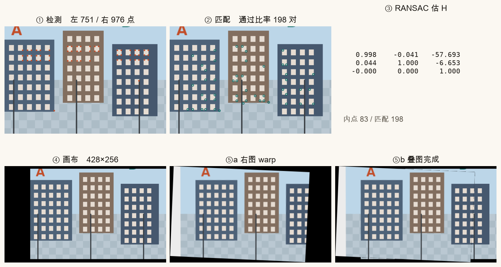
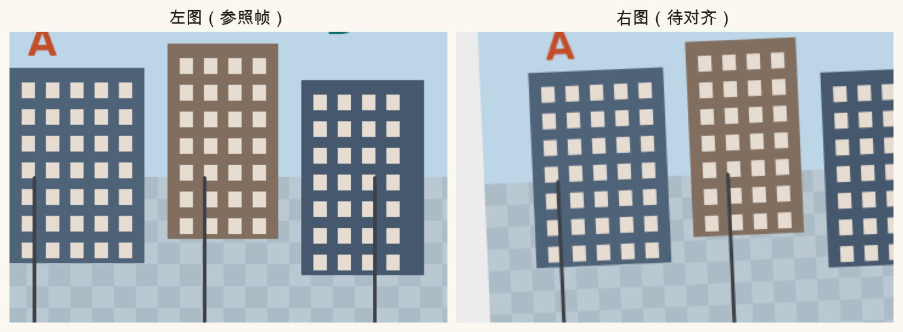
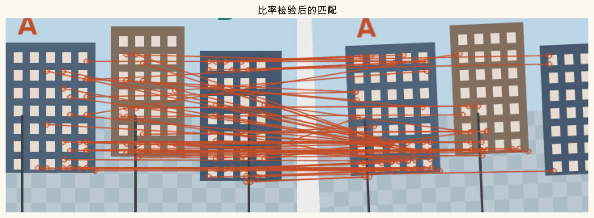
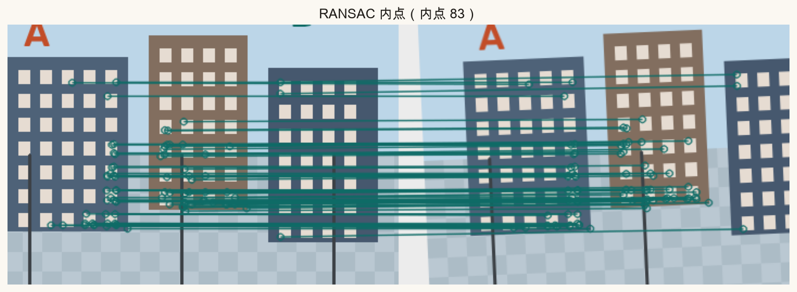
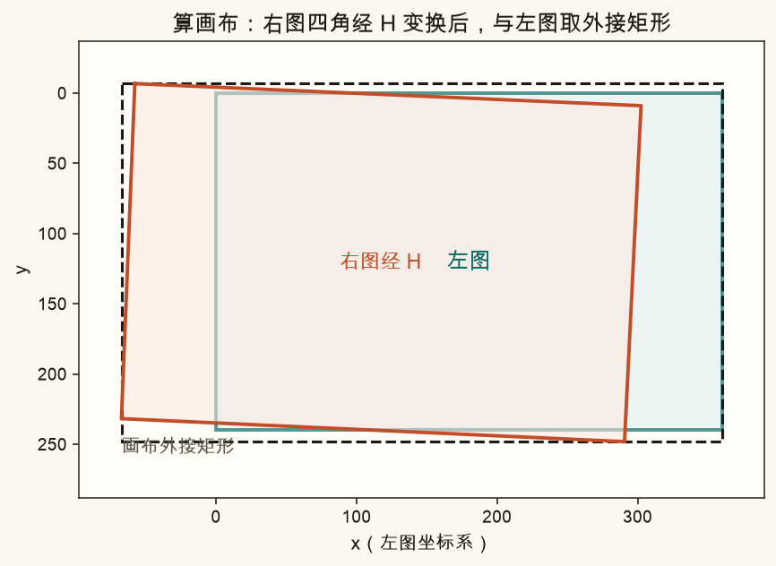
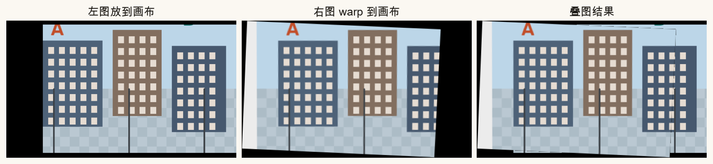
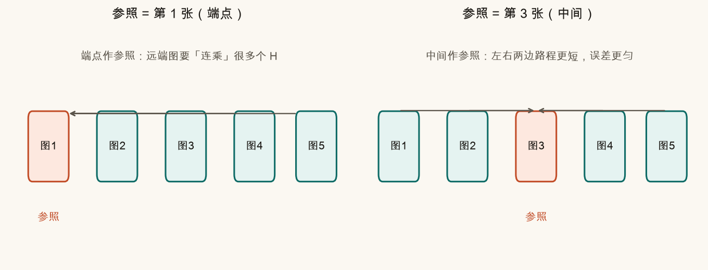
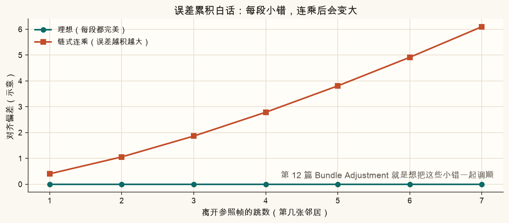
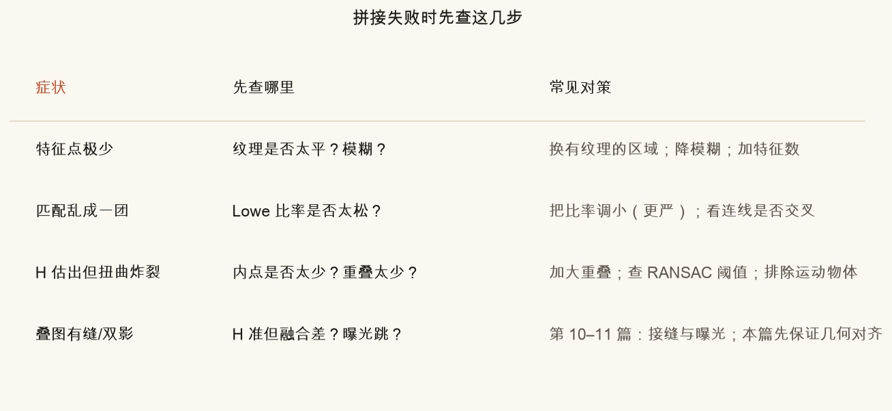

第 8 篇 · 图片拼接入口 · 约 50 分钟
前面几篇把积木拆开讲过了：坐标、单应、特征、匹配、RANSAC。这一篇把它们串成一条能跑通的流水线——两张有重叠的图，自动变成一张更宽的拼图。先看懂两图；再白话谈多图参照帧与误差累积；失败时按步骤排查。
想象你站在原地，先拍左边一张，再稍稍右转拍右边一张。两张照片中间有一块重叠区域——同一栋楼、同一段路，两边都能看见。
人脑会自动「认出来」重叠区是同一地方，然后在脑子里把两张图粘成更宽的视野。电脑不会认，需要一条流水线：
本篇假设场景近似一个平面（墙、远处街景）。近处大平移带来的视差，单个 H 扛不住——第 11 篇会专门看失败。现在先把「平面假设下的标准流水线」跑通。

口诀可以记成：
找点 → 配对 → 估 H → 铺画布 → 叠上去
脚本 code/ch08_stitch.py 就是按这个顺序写的。页面后面有逐步开关的示意，跑脚本后还有一张「五步进度板」对照图。

真实相册里的街景不好控变量。本篇用程序画一张「假街景」（楼、窗户、地面格子），再裁出左图，并把场景做一点平移+微旋转后裁出右图——这样：
SHIFT_X）；
为什么左图叫「参照帧」？因为后面所有变换都把东西映到左图坐标系。右图要「搬家」过来；左图自己可以几乎不动（最多整体平移一下，好让画布从原点开始）。
平坦的白墙、光滑的天空，像素长得都一样，电脑分不清「哪是哪」。特征点喜欢待在有拐弯、有纹理的地方：窗户角、楼边、路面标线交叉处。
本篇用 OpenCV 的 ORB（第 5–6 篇细讲过）。一句话：它在图上找角点，并给每个点编一个「指纹」（描述子），方便下一步比对。
orb = cv2.ORB_create(nfeatures=1200)
kp1, des1 = orb.detectAndCompute(img_a, None)
kp2, des2 = orb.detectAndCompute(img_b, None)kp 是关键点位置列表，des 是每个点的二进制描述子。点数太少（几十个）往往撑不起可靠的 H；太平、太糊、太暗都会让检测变少。
左图一个点的指纹，去右图里找「最像」的那个。暴力匹配器会给出最近邻；再用 Lowe 比率检验：如果「最近」和「次近」差不多像，说明不可靠，丢掉。
bf = cv2.BFMatcher(cv2.NORM_HAMMING, crossCheck=False)
raw = bf.knnMatch(des1, des2, k=2)
good = [m for m, n in raw if m.distance < 0.75 * n.distance]0.75 就是脚本里的 LOWE_RATIO。调小 → 更严、匹配更少但更干净；调大 → 更多匹配，但脏匹配也多。

匹配里一定有外点（认错的对）。第 7 篇的 RANSAC 思路：随机抽 4 对点估一个 H，数有多少点「同意」这个 H（内点），留下内点最多的那个模型。
OpenCV 一行搞定：
# 右图点 → 左图点，得到 H，使 左 ≈ H · 右
H, mask = cv2.findHomography(pts_right, pts_left, cv2.RANSAC, 4.0)4.0 是重投影阈值（像素）：点经 H 映过去后，离目标点超过 4 像素就算外点。阈值太紧 → 内点变少；太松 → 脏模型也过关。

H 是 3×3 矩阵（第 2–3 篇）。几何上它告诉你：右图上某个像素，搬到左图坐标系该落在哪。
方向别搞反：我们要的是「右图 → 左图」的 H。若写成「左 → 右」，后面 warp 右图时就会拧到错误方向。脚本注释里写了 src=右，dst=左。
右图经 H 映到左图坐标系后，可能伸出左图边界——上面、下面、左边都可能冒出来。如果画布只开成左图那么大，冒出去的部分会被裁掉，拼图就缺一块。
做法：
画布上的总变换 = T · H
白话：先按 H 对齐几何，再整体平移，让画布坐标从零起算。

有了 T·H 和画布宽高，把右图 warpPerspective 上去；左图用同样的 T（没有透视，只是平移）放到画布上。重叠区可以半透明混合，方便检查是否对齐：
warped_b = cv2.warpPerspective(img_b, T @ H, (W, H))
canvas_a = cv2.warpPerspective(img_a, T, (W, H))
# 重叠区： (1-α)·A + α·B
本篇叠图用简单半透明，只为「看对齐」。真正好看的接缝、羽化、多频段融合是第 10 篇；曝光跳变是第 11 篇。几何没对齐之前，融合再炫也是在糊弄双影。
两图搞定后，三张、五张怎么拼？常见朴素做法：
参照选在端点（第一张）时，最远端要连乘很多段；选在中间时，左右两边路程更短，误差更均匀。

每一段 H 都有一点点误差。链式连乘时，误差会像滚雪球——跳数越多，对齐越歪。这就是「误差累积」。

本篇多图部分只建立直觉，脚本仍以两图为主。你先把两图流水线吃透；多图时记住两句话：参照别死钉在端点；链式会积误差，全局优化是后话。
拼接翻车时，不要一上来就调融合。按流水线从前往后查：

N_FEATURES。LOWE_RATIO 调严（例如 0.7 → 0.65）；看连线是否大量交叉。mask 内点数；远离近景大视差。下面用示意动画走一遍五步。左侧两块代表输入图；右侧是当前步骤的「产品」。开关某一步，看流水线推进到哪里。这不是真实 ORB，只帮你建立步骤顺序的手感。
source .venv/bin/activate # 若尚未激活
python code/ch08_stitch.py会写出 ch08_pipeline.png、ch08_pair.png、ch08_matches.png、ch08_inliers.png、ch08_canvas.png、ch08_result.png、ch08_steps.png、ch08_multi_ref.png、ch08_error_accum.png、ch08_fail_cases.png，以及你的 ch08_my_result.png。终端应打印「自检通过」。
打开 code/ch08_stitch.py，改顶部参数区。只影响「你的」结果图，课文对照图仍用固定参数。
SHIFT_X 从 140 调到 220：重叠变少，看内点数和拼图是否开始歪。SHIFT_X 调到 60：重叠很多，拼图应更稳；画布也不会宽太多。LOWE_RATIO 调到 0.9（很松）：匹配变多但更脏，观察内点比例和结果是否变差。RANSAC_THRESH 调到 1.0（很紧）或 12.0（很松），对比内点数与扭曲感。BLEND_ALPHA（0.2 ↔ 0.8）：只影响重叠区谁更「抢眼」，不改变几何。检测特征 → 匹配 → RANSAC 估 H → 算画布 → warp 叠图。
匹配里有外点（认错的对）。直接最小二乘会被外点拉歪；RANSAC 先找内点最多的模型。
右图经 H 后可能出现负坐标；平移 T 把所有内容挪到从 (0,0) 开始的正画布，避免被裁掉。
通常选中间（或重叠最好的一张）。端点作参照时，最远端要连乘很多段 H，误差累积更严重。
先怀疑几何（匹配、H、重叠是否够）。融合只能柔化接缝，不能把对齐错误「变正确」。
平面单应把多张图硬贴在一个平面上，广角环拍时边缘会被「撑破」。下一篇对照平面 / 柱面 / 球面三种投影，建立选型直觉。